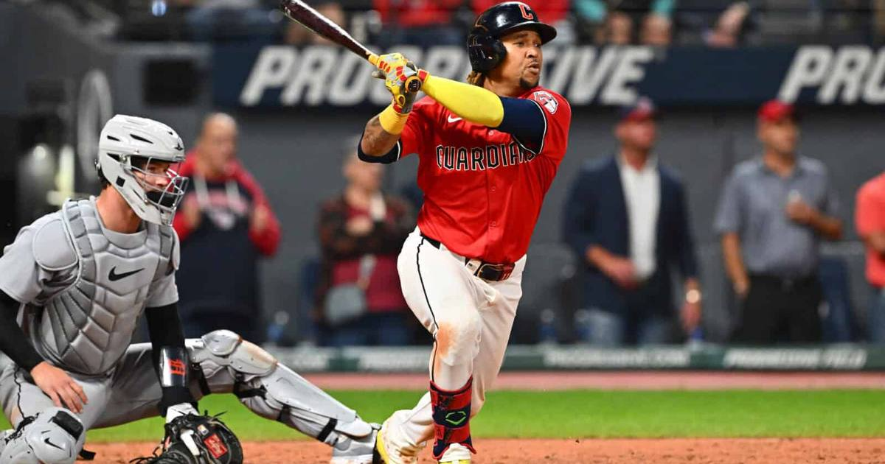

Game 5 picks: Guardians -136, Ramírez 2+ H/R/RBI
Winner-take-all ALDS Game 5 in Cleveland tonight: Guardians -136 with likely Gavin Williams, and José Ramírez's 2+ H/R/RBI prop is the form play.

Disclosure: this post contains affiliate links. I earn a commission on qualifying purchases.
# Game 5 picks: Guardians -136, Ramírez 2+ H/R/RBI
It all comes down to one game. The ALDS goes the distance tonight with first pitch at 8 p.m. ET in Cleveland, a true winner-take-all after the Guardians clawed back from a 2-0 series deficit with back-to-back elimination-game wins.
The pitching matchup
White Sox: Sean Burke; Pitched his way here; the ChiSox need length from him
Guardians: Gavin Williams (likely); Expected to get the ball for the decisive game
Cleveland is listed at -136 — home-field pricing for a team riding the momentum of two straight must-win victories.
The 3-prop ticket: Ramírez is the form play
For the three-leg prop ticket, the anchor is clear:
• José Ramírez — 2+ hits/runs/RBI. He's the form play of the series: a home run and three RBI in Game 4, plus a triple in Game 3. In a winner-take-all spot, you ride the bat that's already carrying the offense.
Sources
• SI — Walk-off wagers: MLB best bets today, predictions for ALDS Game 5
• FanDuel Research — White Sox vs. Guardians prediction, Game 5 picks, best bets and props
Watch
Source: The Guardians Have One Huge Advantage Over the White Sox, by the "At the Office" crew — a Guardians–White Sox ALDS matchup preview where Noah and Erik break down where Cleveland holds the edge in the series.
Gear up: José Ramírez jersey via Fanatics